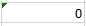

Semana 2
Cuando introducimos una fórmula en una celda puede ocurrir que se produzca un error. Dependiendo del tipo de error puede que Excel nos avise o no. Podemos detectar un error sin que nos avise cuando aparece la celda con un símbolo en la esquina superior izquierda tal como esta 
Al hacer clic sobre el símbolo aparecerá un cuadro como información error que nos permitirá saber más sobre el error:

Dependiendo del tipo de error, al hacer clic sobre el cuadro anterior se mostrará un cuadro u otro, a veces el error sea simplemente que la fórmula de la celda no tiene el mismo aspecto que todas las demás fórmulas adyacente (por ejemplo, ésta sea una resta y todas las demás sumas).
Si no sabemos qué hacer, disponemos de la opción Ayuda sobre este error. Si lo que queremos es comprobar la fórmula para saber si hay que modificarla o no, podríamos utilizar la opción Modificar en la barra de fórmulas. Si la fórmula es correcta, se utilizará la opción Omitir error para que desaparezca el símbolo de la esquina de la celda.
Puede que al introducir la fórmula nos aparezca como contenido de la celda #texto, siendo texto un valor que puede cambiar dependiendo del tipo de error. Por ejemplo:
En ocasiones, podemos equivocarnos al ingresar manualmente el nombre de una función. En estos casos, al intentar aceptar la función para ver el resultado veremos que Excel nos muestra el error #¡Nombre!. De esta manera, podemos situarnos en la barra de fórmulas o presionar la tecla F2 para editarlo
Si cometemos un error al ingresar una fórmula, Excel nos devuelve un texto que informa su tipo, entre los que se encuentran:
| Mensaje | Signficado |
|---|---|
| ##### | Se produce cuando el ancho de una columna no es suficiente o cuando se utiliza una fecha o una hora negativa. |
| #¡NUM! | Cuando se escriben valores numéricos no válidos en una fórmula o función. |
| #¡NULO! | Cuando se especifica una intersección de dos áreas que no se intersectan. |
| #¡N/A! | Indica que no es posible encontrar una coincidencia exacta con el valor que se está buscando. |
| #¡REF! | Referencia a una celda inválida o inexistente. |
| #¡NÚMERO! | Expresa la existencia de un valor no numérico en una fórmula de parámetros numéricos. |
| #¡NOMBRE¡ | Nombre de la función incorrecto. |
| #¡DIV/0! | Cuando se intenta dividir entre cero. |